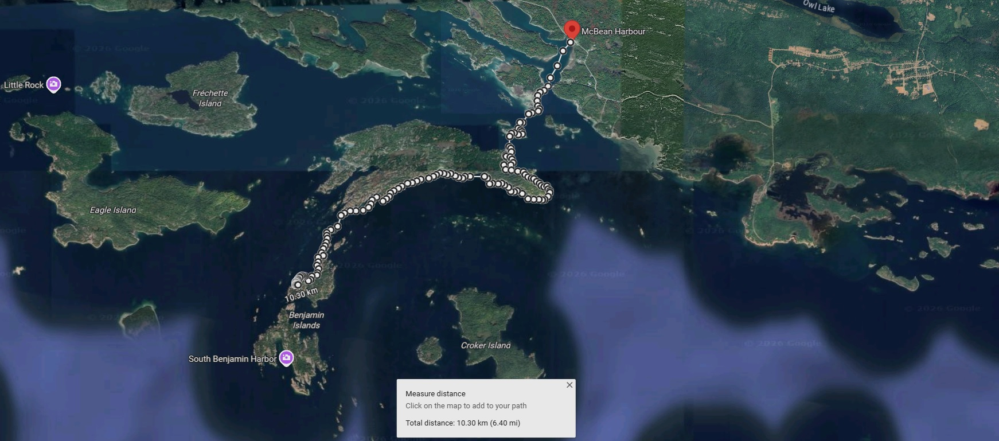

Two years earlier, I had reluctantly paddled away from the Benjamin Islands with the uneasy feeling that I had only scratched the surface.
There were still sheltered channels I had never entered, distant shorelines I had only admired from across the water, and islands that had quietly promised, "Come back when you have more time."
Some places call you back.
The Benjamin Islands never stopped.
That opportunity finally arrived in August 2025.
This time I launched from McBean Harbour instead of Spanish, shortening the approach considerably and allowing nearly five full days to explore rather than simply reach the islands.
My plans were ambitious. I hoped to revisit familiar places while finally venturing farther west toward Crocker Island and deeper into the countless channels surrounding Fox Island.
Nature, as always, had its own itinerary.
Persistent easterly winds ruled much of the trip, turning the exposed crossing toward Crocker Island into an objective better left for another expedition.
Rather than fighting the conditions, I adjusted my plans and allowed the weather to guide me toward places I had overlooked during my first visit.
It turned out to be exactly the right decision.
With a longer stay, I wandered through sheltered passages, explored the western and southern shores of the Benjamin Islands in far greater detail, and completely circumnavigated Fox Island.
The outward journey followed the open shoreline facing the Benjamins. The return carried me deep into Fox Harbour, weaving through quiet channels that felt hidden from the rest of the North Channel.

The pace of this expedition was completely different.
Instead of constantly thinking about crossings, weather windows, and reaching camp before dark, I finally had time to simply explore.
I lingered because a shoreline looked interesting. I landed because a cove invited curiosity. Some afternoons were spent drifting through impossibly clear water with a camera in one hand and no particular destination in mind.
Sometimes the greatest adventure
is finally having enough time
to slow down.
There were more wildlife encounters, another bear, curious beavers, spectacular campsites, thunderstorms, unforgettable sunsets, and landscapes that somehow managed to surprise me all over again.
This expedition had fewer close calls than my first visit.
But it revealed even more of the Benjamin Islands.
Detailed stories, photographs, maps, and trip reports from this expedition are currently being written and will be added here over time.